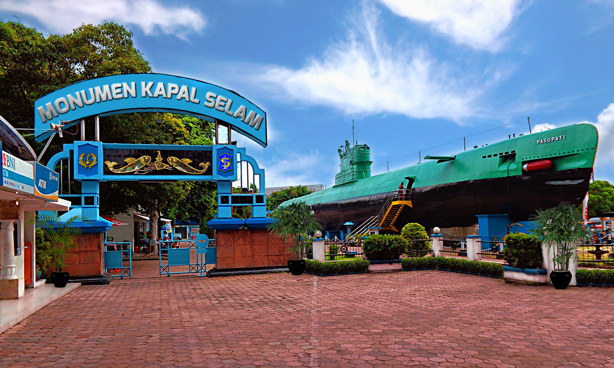
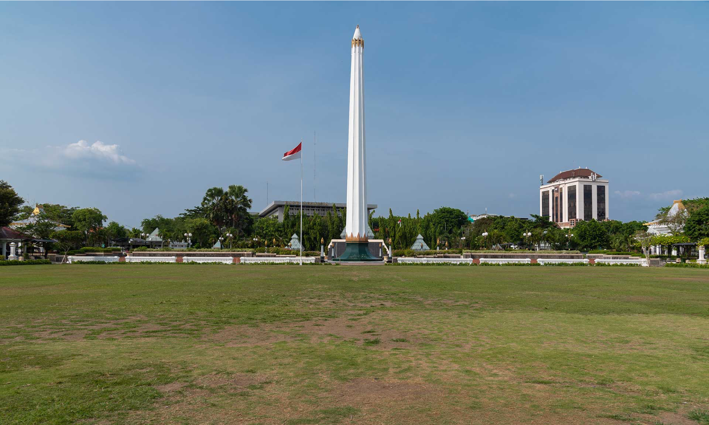
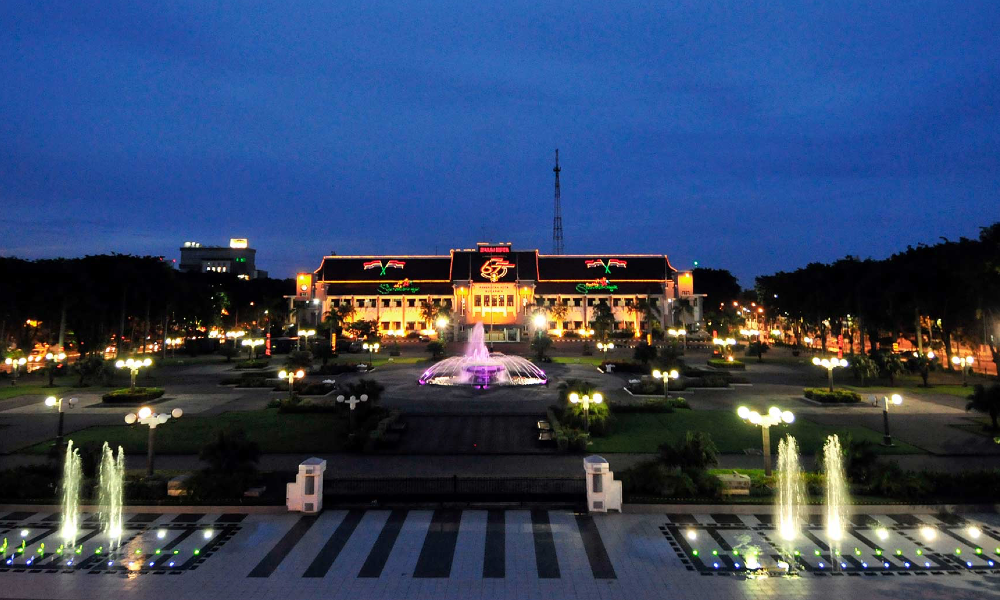

Monkasel
Monumen Kapal Selam is one of tourist destination in Surabaya. Actually, this museum was KRI
Pasopati 410 which is one of Indonesian Navy fleets that was made by Soviet Union in 1952.
This submarine was involved in the Battle of Arafura Sea to liberate West Irian from the Dutch.
| Address | : | Jl. Pemuda No.39, Embong Kaliasin, Genteng |
| Open | : | Every Day 08.00 - 22.00 |
| Ticket | : | Rp15,000/person |
| Credit | : | http://monkasel.id/ |

Tugu Pahlawan
Tugu Pahlawan or also known as Heroes Monument was build in November 10 1951 and inaugurated in
November 10 1952 by Mr. Ir. Soekarno - Indonesia first president in order to remind us about the Battle of Surabaya.
| Address | : | Jl. Tunjungan 1 - 3 |
| Open | : | 08.00 - 15.00 (Monday - Thursday) | 08.00 - 14.00 (Friday) |
07.00 - 14.00 (Weekend) | Close on Religious Big Day |
| Ticket | : | Free |
| Credit | : | https://sparkling.surabaya.go.id/ |

Balai Kota
Balai Kota or Surabaya City Hall is the administrative center of Surabaya, this building was build in
the 1920s by Cosman Citroen. Sometimes, some big events in Surabaya also took place in this building.
| Address | : | Jl. Taman Surya No. 1 |
| Credit | : | https://sparkling.surabaya.go.id/ |